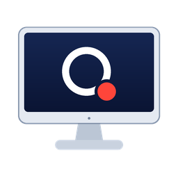

Mac
macOS 13 ou superior. Abra o instalador DMG e arraste o Quall Monitor para Aplicativos. Escolha Apple Silicon ou Intel.
Em preparação

Quall MonitorConecte até oito aparelhos como monitores estendidos pela rede local. Abra o Quall Monitor e continue seu trabalho nas próximas telas.
Escolha seu downloadRequisito do receptor: instale o Quall Studio em cada aparelho que será usado como monitor.
macOS 13 ou superior. Abra o instalador DMG e arraste o Quall Monitor para Aplicativos. Escolha Apple Silicon ou Intel.
Windows 11 de 64 bits. Instalador com o driver SudoVDA incluído. A instalação pede acesso de administrador. O instalador desta prévia ainda não tem assinatura digital.
Quall Studio e Quall Monitor podem ficar abertos juntos, com seus próprios ajustes e pareamentos. A interface do Monitor está disponível em português e inglês.